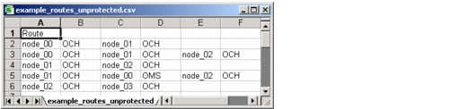

Importing and Exporting Data > Importing and Exporting Route Data Files
Importing and Exporting Route Data Files
You can use route data files so that SP Guru Transport Planner uses predefined routes during a routing or dimensioning run, instead of calculating the routes. For more information about importing routes, see Route DCL/OCH Traffic Dialog Box, Dimension DCL/OCH Layer Dialog Box, and Grooming DCL Traffic with Fixed Routes.
Note—The route data files for Groom DCL to OCH Traffic > Fixed Routes should be specified entirely at the OTS layer (with the keyword OTS behind each layer). The grooming algorithm optimizes the layer at which to switch the traffic.
Unprotected Routes
Data files for unprotected routes use the definition shown in Figure 5-23. The file starts with the heading "Route" (singular) on its own row. Each subsequent row specifies one route. Each line specifies the nodes used by the route, from the starting node to the end node; each node is followed by a field that specifies the layer at which the traffic is switched ("OTS", "OMS", "OCH", or "DCL").
Figure 5-23 Routes (Unprotected) Data File in .csv Format

Protected Routes
Data files for protected routes use the definition shown in Figure 5-24. The file starts with the heading "Routes" (plural) on its own row. Each subsequent row specifies two paths—the working path first and the protection path second—separated by one empty cell. Each path definition uses the same conventions as in the Unprotected routes data file: a list of nodes, from start to end node; each node is followed by the layer at which the traffic is switched ("OTS", "OMS", "OCH", or "DCL").
Figure 5-24 Routes (Protected) Data File in .csv Format
| Home © 1987-2007 OPNET Technologies, Inc. All Rights Reserved. This software may be covered by one or more U.S. Patents. See complete patent notice in the Legal Notices section. OPNET Support Center |